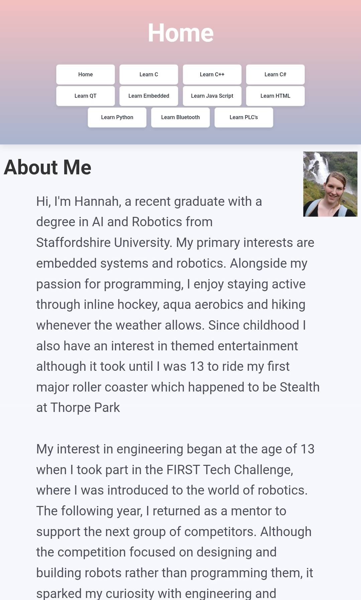
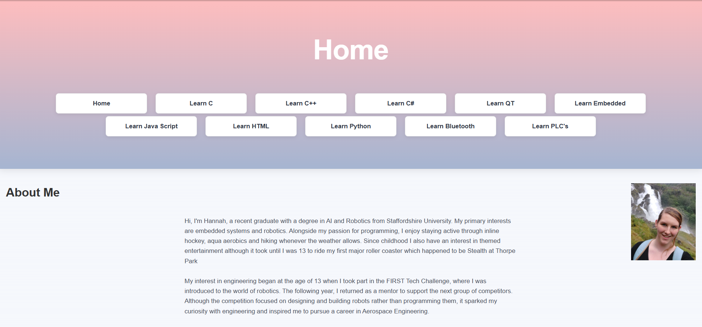
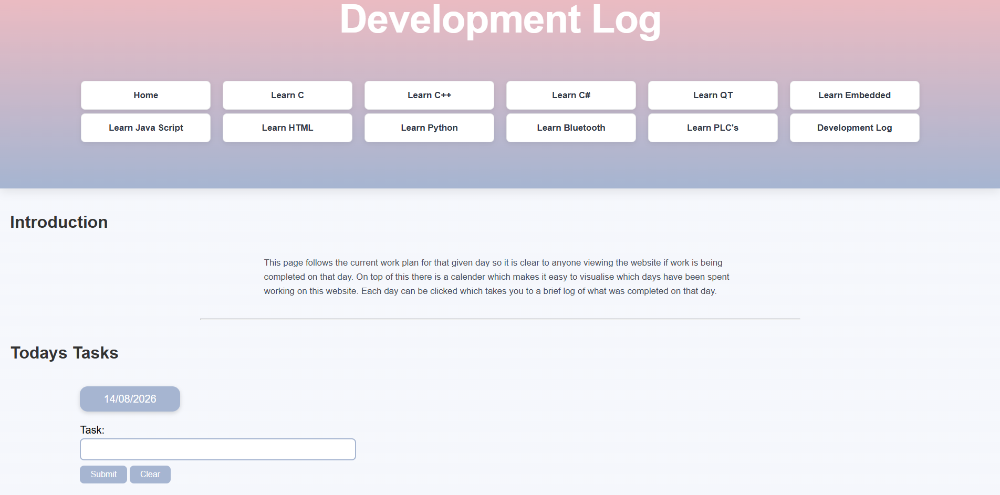
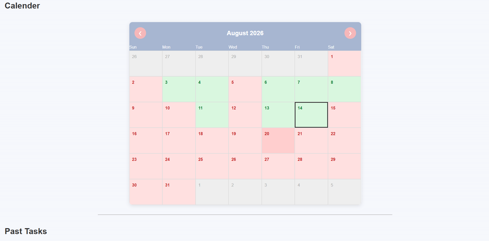
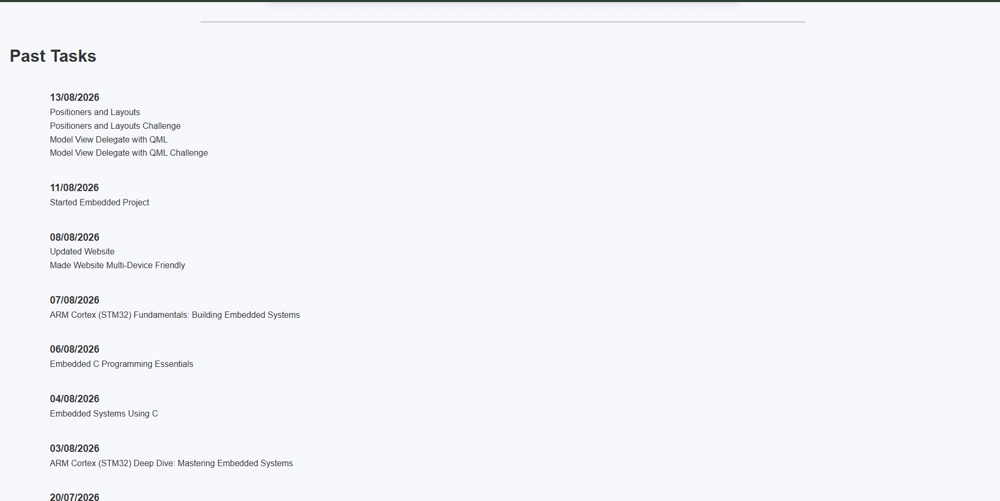

Milestones
Milestone 1
22/05/2026


Next Steps For Milestone 2 On This Page:
Milestone 2
29/05/2026


Some other changes to the website include adding a references page. This can be accessed via every reference thoughout the website but also on the home page when I directly talk about the references page. On top of this a mindmap was added to the home page to highlight my orginal ideas for this website. I have removed the JavaScipt which kept check boxes ticked when the page is reset. This code was not mine and felt it defeated the point of the ebsite. I do plan on also reworking the progress bars when I have a better understanding of how they work. But I don't want to add any JavaScipt until I have more of a grasp on the basics. I now plan on adding a checklist to the fist page with a progress bar that will eventually increase when the checklist is ticked. But there is still a long way to go in milestone 2.
02/06/2026


08/08/2026


14/08/2026


